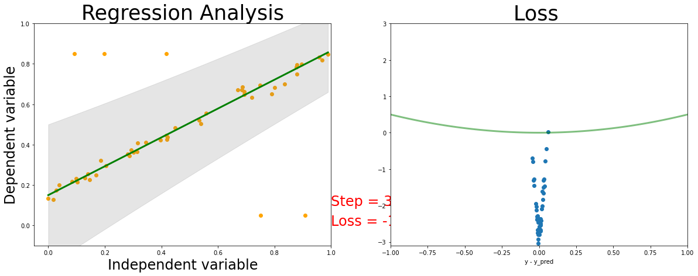

# this is one way to define a networkclass Net(torch.nn.Module):def__init__(self, n_feature, n_hidden, n_output):super(Net, self).__init__()self.hidden = torch.nn.Linear(n_feature, n_hidden) # hidden layerself.predict = torch.nn.Linear(n_hidden, n_output) # output layerdef forward(self, x): x = F.relu(self.hidden(x)) # activation function for hidden layer x =self.predict(x) # linear outputreturn x
Mean Square Loss robustness analysis
loss_func = torch.nn.MSELoss() # this is for regression mean squared loss# Fit a linear regression using mean squared error.regression = Net(n_feature=1, n_hidden=1, n_output=1) # RegressionModel() params = regression.parameters()optimizer = torch.optim.Adam(params, lr =0.001)
Analysis MSE Regression
Gaussian Loss Robustness analysis
For gaussian loss the model in addition to the prediction also predicts the confidence in the prediction in the form of the gaussian variance.
# this is one way to define a networkclass GaussianNet(torch.nn.Module):def__init__(self, n_feature, n_hidden, n_output):super(GaussianNet, self).__init__()self.hidden = torch.nn.Linear(n_feature, n_hidden) # hidden layerself.predict = torch.nn.Linear(n_hidden, n_output) # output layerself.variance = torch.nn.Linear(n_hidden, 1) # variance layer#torch.nn.init.xavier_uniform_(self.variance.weight)#torch.nn.init.normal_(self.variance.weight, mean=1.0)#torch.nn.init.normal_(self.variance.bias, mean=0.0)def forward(self, x): x = F.relu(self.hidden(x)) # activation function for hidden layer out =self.predict(x) # linear output var = F.softplus(self.variance(x))return out, var
loss_func = torch.nn.GaussianNLLLoss( reduction='none')# Fit a linear regression using mean squared error.regression = GaussianNet(n_feature=1, n_hidden=2, n_output=1) # RegressionModel() params = regression.parameters()optimizer = torch.optim.Adam(params, lr =0.001)
Smaller comparable network
Laplace loss function
def LaplaceNLLLoss(input, target, scale, eps=1e-06, reduction='mean'): loss = torch.log(2*scale) + torch.abs(input- target)/scale# Inputs and targets much have same shapeinput=input.view(input.size(0), -1) target = target.view(target.size(0), -1)ifinput.size() != target.size():raiseValueError("input and target must have same size")# Second dim of scale must match that of input or be equal to 1 scale = scale.view(input.size(0), -1)if scale.size(1) !=input.size(1) and scale.size(1) !=1:raiseValueError("scale is of incorrect size")# Check validity of reduction modeif reduction !='none'and reduction !='mean'and reduction !='sum':raiseValueError(reduction +" is not valid")# Entries of var must be non-negativeif torch.any(scale <0):raiseValueError("scale has negative entry/entries")# Clamp for stability scale = scale.clone()with torch.no_grad(): scale.clamp_(min=eps)# Calculate loss (without constant) loss = (torch.log(2*scale) + torch.abs(input- target) / scale).view(input.size(0), -1).sum(dim=1)# Apply reductionif reduction =='mean':return loss.mean()elif reduction =='sum':return loss.sum()else:return loss
loss_func = LaplaceNLLLoss# Fit a linear regression using mean squared error.regression = GaussianNet(n_feature=1, n_hidden=2, n_output=1) # RegressionModel() params = regression.parameters()optimizer = torch.optim.Adam(params, lr =0.001) ###################### Training####################my_images = []fig, (ax1, ax2) = plt.subplots(figsize=(20,7), nrows=1, ncols=2)# train the networkfor epoch inrange(4000): prediction, scales = regression(x) loss_all = loss_func(prediction, y, scales, reduction='none') # must be (1. nn output, 2. target) loss = torch.mean(loss_all)#if t%10 == 0: print (loss) optimizer.zero_grad() # clear gradients for next train loss.backward() # backpropagation, compute gradients optimizer.step() # apply gradientsif np.mod(epoch, 100) ==0: sort_x, _ = torch.sort(x, dim=0) sort_prediction, sort_scales = regression(sort_x) print (loss)# plot and show learning process plt.cla() ax1.cla() ax1.set_title('Regression Analysis', fontsize=35) ax1.set_xlabel('Independent variable', fontsize=24) ax1.set_ylabel('Dependent variable', fontsize=24) ax1.set_xlim(-0.05, 1.0) ax1.set_ylim(-0.1, 1.0) ax1.scatter(x.data.numpy(), y.data.numpy(), color ="orange") ax1.plot(sort_x.data.numpy(), sort_prediction.data.numpy(), 'g-', lw=3) dyfit =2* sort_scales.data.numpy() # 2*sigma ~ 95% confidence region ax1.fill_between( np.squeeze(sort_x.data.numpy()), np.squeeze(sort_prediction.data.numpy() - dyfit), np.squeeze(sort_prediction.data.numpy() + dyfit), color='gray', alpha=0.2)#l2_loss_plot_x = np.linspace(0,1,num=100)#y_plot_true = l2_loss_plot_x * scale_true + shift_true#ax1.plot(l2_loss_plot_x, y_plot_true, 'k') ax1.text(1.0, 0.1, 'Step = %d'% epoch, fontdict={'size': 24, 'color': 'red'}) ax1.text(1.0, 0, 'Loss = %.4f'% loss.data.numpy(), fontdict={'size': 24, 'color': 'red'}) diff = prediction.data.numpy() - y.data.numpy() ax2.cla() l2_loss_plot_x = np.linspace(-1,1,num=100) ax2.plot(l2_loss_plot_x, 0.5*l2_loss_plot_x**2, color="green", lw=3, alpha=0.5) ax2.scatter(diff, loss_all.data.numpy()) ax2.set_title('Loss ', fontsize=35) ax2.set_xlabel('y - y_pred') ax2.set_ylim(-3.1, 3) ax2.set_xlim(-1, 1)# Used to return the plot as an image array # (https://ndres.me/post/matplotlib-animated-gifs-easily/) fig.canvas.draw() # draw the canvas, cache the renderer image = np.frombuffer(fig.canvas.tostring_rgb(), dtype='uint8') image = image.reshape(fig.canvas.get_width_height()[::-1] + (3,)) my_images.append(image)
The line is better fit to the data by avoiding to the noisy data.
Cauchy NLL Loss function Robustness analysis
def CauchyNLLLoss(input, target, scale, eps=1e-06, reduction='mean'):# Inputs and targets much have same shapeinput=input.view(input.size(0), -1) target = target.view(target.size(0), -1)ifinput.size() != target.size():raiseValueError("input and target must have same size")# Second dim of scale must match that of input or be equal to 1 scale = scale.view(input.size(0), -1)if scale.size(1) !=input.size(1) and scale.size(1) !=1:raiseValueError("scale is of incorrect size")# Check validity of reduction modeif reduction !='none'and reduction !='mean'and reduction !='sum':raiseValueError(reduction +" is not valid")# Entries of var must be non-negativeif torch.any(scale <0):raiseValueError("scale has negative entry/entries")# Clamp for stability scale = scale.clone()with torch.no_grad(): scale.clamp_(min=eps)# Calculate loss (without constant) loss = (torch.log(3.14*scale) + torch.log(1+ ((input- target)**2)/scale**2)) .view(input.size(0), -1).sum(dim=1)# Apply reductionif reduction =='mean':return loss.mean()elif reduction =='sum':return loss.sum()else:return loss
loss_func = CauchyNLLLoss# Fit a linear regression using mean squared error.regression = GaussianNet(n_feature=1, n_hidden=2, n_output=1) # RegressionModel() params = regression.parameters()optimizer = torch.optim.Adam(params, lr =0.001) ###################### Training####################my_images = []fig, (ax1, ax2) = plt.subplots(figsize=(20,7), nrows=1, ncols=2)# train the networkfor epoch inrange(4000): prediction, sigmas = regression(x) # input x and predict based on x loss_all = loss_func(prediction, y, sigmas, reduction='none') # must be (1. nn output, 2. target) loss = torch.mean(loss_all)#if t%10 == 0: print (loss) optimizer.zero_grad() # clear gradients for next train loss.backward() # backpropagation, compute gradients optimizer.step() # apply gradientsif np.mod(epoch, 100) ==0:#print (loss) sort_x, _ = torch.sort(x, dim=0) sort_prediction, sort_sigmas = regression(sort_x) # input x and predict based on x# plot and show learning process plt.cla() ax1.cla() ax1.set_title('Regression Analysis', fontsize=35) ax1.set_xlabel('Independent variable', fontsize=24) ax1.set_ylabel('Dependent variable', fontsize=24) ax1.set_xlim(-0.05, 1.0) ax1.set_ylim(-0.1, 1.0) ax1.scatter(x.data.numpy(), y.data.numpy(), color ="orange") ax1.plot(sort_x.data.numpy(), sort_prediction.data.numpy(), 'g-', lw=3) dyfit =2* np.sqrt(sort_sigmas.data.numpy()) # 2*sigma ~ 95% confidence region ax1.fill_between( np.squeeze(sort_x.data.numpy()), np.squeeze(sort_prediction.data.numpy() - dyfit), np.squeeze(sort_prediction.data.numpy() + dyfit), color='gray', alpha=0.2)#l2_loss_plot_x = np.linspace(0,1,num=100)#y_plot_true = l2_loss_plot_x * scale_true + shift_true#ax1.plot(l2_loss_plot_x, y_plot_true, 'k') ax1.text(1.0, 0.1, 'Step = %d'% epoch, fontdict={'size': 24, 'color': 'red'}) ax1.text(1.0, 0, 'Loss = %.4f'% loss.data.numpy(), fontdict={'size': 24, 'color': 'red'}) diff = prediction.data.numpy() - y.data.numpy() ax2.cla() l2_loss_plot_x = np.linspace(-1,1,num=100) ax2.plot(l2_loss_plot_x, 0.5*l2_loss_plot_x**2, color="green", lw=3, alpha=0.5) ax2.scatter(diff, loss_all.data.numpy()) ax2.set_title('Loss ', fontsize=35) ax2.set_xlabel('y - y_pred') ax2.set_ylim(-3.1, 3) ax2.set_xlim(-1, 1)# Used to return the plot as an image array # (https://ndres.me/post/matplotlib-animated-gifs-easily/) fig.canvas.draw() # draw the canvas, cache the renderer image = np.frombuffer(fig.canvas.tostring_rgb(), dtype='uint8') image = image.reshape(fig.canvas.get_width_height()[::-1] + (3,)) my_images.append(image)

Analysis Cauchy NLL Regression
The line is better fit to the data than the gaussian by avoiding to the noisy data.